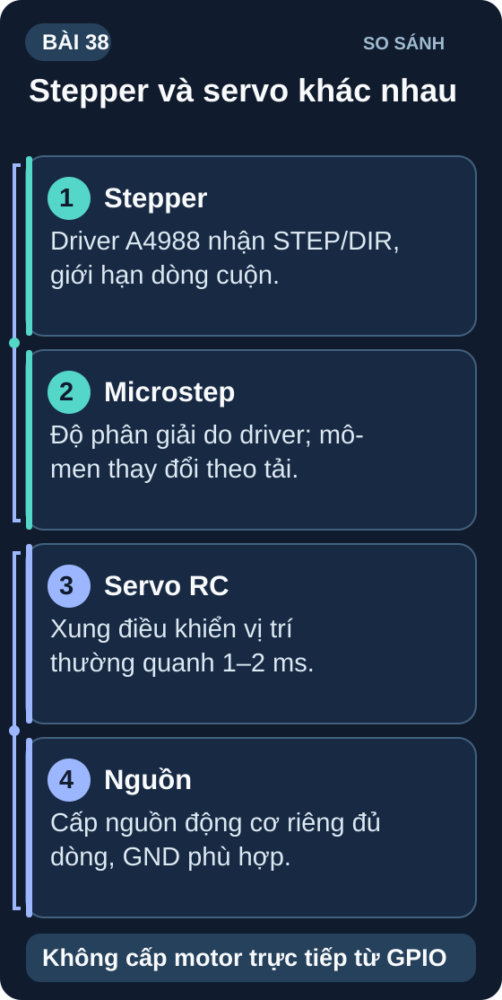

Stepper Motor & Servo — Điều Khiển Góc Chính Xác
Từ máy in 3D đến cánh tay robot — động cơ bước và servo là hai loại actuator quan trọng nhất trong tự động hóa.
- Hiểu nguyên lý động cơ bước — bước toàn (1,8°/step), microstepping
- Sử dụng driver A4988 — STEP/DIR interface, cài điện trở giới hạn dòng
- Tính tốc độ và số bước cho quỹ đạo cụ thể
- Điều khiển Servo RC (SG90, MG996R) — xung 1ms–2ms / 50Hz
- Phân biệt Servo RC vs Servo công nghiệp (Dynamixel)
- Thực hành: servo quét 0°–180° mượt mà và stepper quay 90°/180°/360° chính xác
- Nguyên nhân stepper mất bước (skipping) và cách phòng tránh

1. Động cơ bước — Stepper Motor
Stepper motor quay theo từng bước rời rạc khi xung điện được gửi đến cuộn dây. Motor NEMA 17 phổ biến: 200 bước/vòng = 1,8°/step. Không cần encoder — vị trí được kiểm soát bằng đếm số bước.
Đối chiếu hướng dẫn carrier A4988 của Pololu cho biến thể board đang dùng. Ngắt nguồn trước khi cắm/rút dây motor; không đo dòng cuộn bằng dòng tại nguồn VMOT.
// Stepper với A4988 — quay 1 vòng
const int STEP_PIN = 13, DIR_PIN = 12;
const int STEPS_PER_REV = 200; // NEMA 17: 1.8°/step
void step(int steps, bool cw, int delayUs = 1000) {
digitalWrite(DIR_PIN, cw ? HIGH : LOW);
for (int i = 0; i < abs(steps); i++) {
digitalWrite(STEP_PIN, HIGH);
delayMicroseconds(delayUs);
digitalWrite(STEP_PIN, LOW);
delayMicroseconds(delayUs);
}
}
void setup() {
pinMode(STEP_PIN, OUTPUT);
pinMode(DIR_PIN, OUTPUT);
}
void loop() {
step(STEPS_PER_REV, true, 800); // 1 vòng CW, 800µs/step
delay(1000);
step(STEPS_PER_REV/2, false, 800); // 180° CCW
delay(1000);
}
2. Servo RC — Điều khiển góc 0°–180°
// Servo SG90 với thư viện Servo.h
#include <Servo.h>
Servo myServo;
const int SERVO_PIN = 9;
void setup() {
myServo.attach(SERVO_PIN); // Timer PWM tự động
}
void loop() {
// Quét 0° → 180° mượt mà
for (int angle = 0; angle <= 180; angle += 2) {
myServo.write(angle);
delay(15); // 15ms/2° = mượt
}
for (int angle = 180; angle >= 0; angle -= 2) {
myServo.write(angle);
delay(15);
}
}
| Tiêu chí | Stepper + A4988 | Servo RC (SG90) | Servo DC + Encoder |
|---|---|---|---|
| Độ chính xác góc | 0,9°–1,8°/step | ~2–5° | <0,1° |
| Tốc độ tối đa | Trung bình | Nhanh (60°/0,1s) | Rất nhanh |
| Lực (torque) | Cao ở tốc độ thấp | Nhỏ (SG90: 1,8kg·cm) | Cao và chính xác |
| Giá | ~50k+driver | ~15–50k | ~500k–10tr |
| Dùng cho | CNC, máy in 3D, scanner | RC, robot nhỏ, cánh tay đơn giản | Robot công nghiệp |
1: 1/16 microstepping: 200 × 16 = 3200 microsteps/vòng. 45° = 45/360 vòng = 1/8 vòng. Microsteps = 3200/8 = 400 microsteps.
2: (a) Tốc độ quá cao: torque giảm theo tốc độ — thêm acceleration ramp (AccelStepper library); (b) Dòng A4988 quá thấp: tăng V_ref đến giới hạn an toàn của motor; (c) Tải quá lớn: motor không đủ torque — dùng motor NEMA 23 hoặc giảm tốc bằng pulley/gear. Kiểm tra: chạy không tải trước — nếu ổn thì nguyên nhân là tải, nếu vẫn mất bước là tốc độ hoặc dòng.
3: Góc 90° = giữa 0° và 180° → xung = 1ms + (90/180) × (2ms–1ms) = 1ms + 0,5ms = 1,5ms. Tần số servo chuẩn = 50Hz (chu kỳ 20ms). Servo.write(90) trong Arduino tự tính toán xung 1,5ms ở 50Hz.